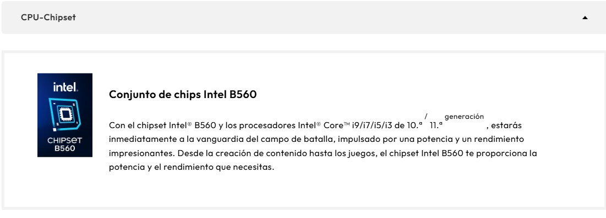
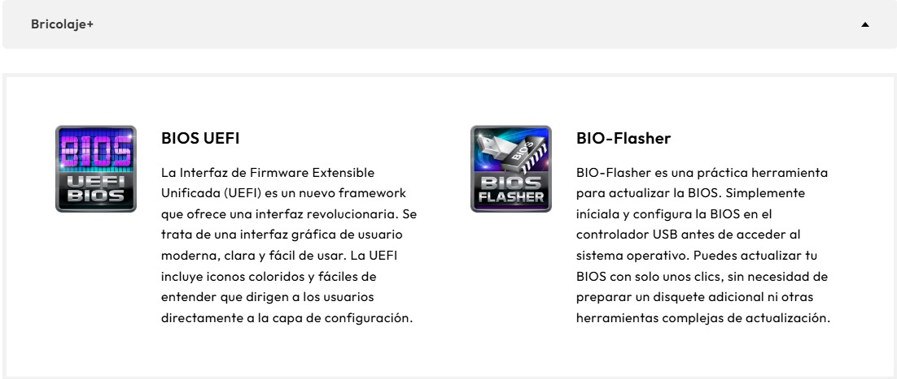
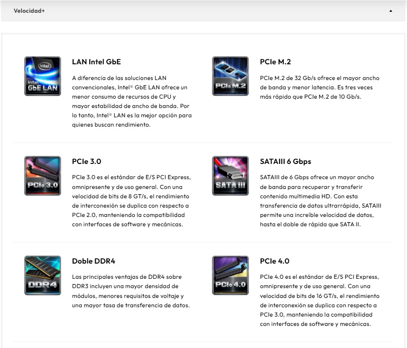

Link con información de como se levanto el servidor web: Haz clic aquí



Link con información de la Mainboard: Haz clic aquí
Parametro 1: Processor Type: significa el modelo del procesador (CPU) que tiene la PC, es un i7 1255u, 12th Gen es la generacion del procesador, i7 es la gamma de procesador, existiendo varios como i3, i5, i7, 1255u es el modelo especifico de generacion 12 y la u significa que el modelo de procesador es de bajo consumo energetico, ideal para poco consumo en laptops, la mayoria de modelos de procesadores para laptops integran sus propios graficos - Parámetro 1
Parametro 2: .Total Memory: es la cantidad total total de memoria ram instalada en la laptop, es decir la cantidad de memoria donde se guardan datos temporales, mientras mas ram tengamos podremos ejecutar mas progrmas a la vez sin que el sistema se vuelva lento, esta influye en el rendimiento del sistema y en la capacidad de multitareas - Parámetro 2
Parametro 3: BIOS Version: el BIOS es el software basico que inicia el hardware del sistema y permite arrancar la laptop, en mi caso yo tengo la version F.19, las version de BIOS necesitan ser actualizadas para corregir errores o mejorar compatibilidad o añadir nuevas funciones, en algunos casos, tener un BIOS actualizado puede ayudar a mejorar el rendimiento del sistema y la compatibilidad con nuevos componentes - Parámetro 3
Link con información de las letras del procesador: Haz clic aquí